Drifter
An unregistered community under the sewers found Null and raised them. They make weapons from scrap and share what is left.
- Starting weapon
- Pipe Wrench
- Personality
- Blunt, survival first
- Passive
- HP regen +15%, Coins +5%
2087. A giant station that became a vertical city when work on the orbital elevator stopped. You wake up with your ID chip wiped, the one person missing from the records of ECHO, the AI that runs the city.
26 years since the station to the sky stopped. The AI that watches every floor has a record of everyone but one: you, with a blank ID chip.
It was a station before it was a city. In 2041 the Keiron Group began building it as the ground station of the orbital elevator, the upbound line. On the Day of Stopping in 2061, work stopped without a word of explanation. The millions who came for jobs could not leave, and the station became a vertical city that kept piling upward. Even after work stopped, the old station signs in neon never went out.
ECHO, the AI that runs the whole station, controls power, water, security and ID chips, and predicts what people will do tomorrow. Step outside the prediction and it wipes your chip. That is the heaviest punishment in this city: Deletion. You wake up on Platform 0 and your wrist chip shows only NULL where your name should be. A blank chip means ECHO cannot see you.
You clean up the lower floors and earn a name. You learn there is a corporation behind the gangs.


Lieutenant Fang 「Rat Tooth」 / Boss Grom 「Sewer King」
The awakened Null drives out the scrap gang that holds the sewers.
“There is only one king in the sewers. And a nobody dares?”
 Open ECHO log fragment 01
Open ECHO log fragment 01Grom's chains carry a Keiron stamp. They were not scrap. They were corporate supplies.


Lieutenant Jin 「Ledger Keeper」 / Boss Baron Red 「Four Arms」
A ring that smuggles modded gear. An old client of Barrel, the Arms Dealer.
“Four arms means four ledgers. Which one should I write you in?”
 Open ECHO log fragment 02
Open ECHO log fragment 02Jin's ledger shows part of the profit going up to an upper-floor account every month.


Lieutenant Salt 「One-Eyed Captain」 / Boss Deep Jack 「Deep-Sea Boss」
You clash with a smuggling ring armed with heavy weapons.
“The seabed is full of things the corporations threw away. I will put you down there too.”
 Open ECHO log fragment 03
Open ECHO log fragment 03The smuggled cargo turned out to be corporate lab waste and cyborg parts.


Lieutenant Seven 「Virus」 / Boss Root 「Lord of the Slum」
A hacker gang and its drone swarms hold the lines of the slum.
“I opened your chip… and there is nothing. I have never seen this.”
 Open ECHO log fragment 04
Open ECHO log fragment 04An ECHO signal intercepted by Glitch. ECHO 「forecasts」 gang wars before they start.
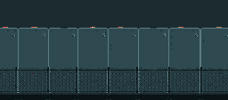


Lieutenant Steel Bee 「Mercenary Captain」 / Boss Zero 「Discarded Weapon」
Cyborg mercenaries the corporations threw away. Act 1 ends here.
“No orders. No target. Then I will make you the target.”
Zero's core log reads 「lower-floor suppression test subject」. And for the first time, ECHO broadcasts to Null directly: “Unidentified entity. Correct your route.”
You climb to the middle and upper floors, gathering proof that the gangs were designed by ECHO.


Lieutenant Spark 「Gang Leader」 / Boss Ampere 「High-Voltage Lord」
A biker gang that took over the upbound freight line.
“This track does not go up. So we run.”
 Open ECHO log fragment 06
Open ECHO log fragment 06The power the Volt Runners stole was ECHO's backup supply. ECHO let them steal it on purpose.


Lieutenant Moth 「Mixer」 / Boss Smog Mother 「Mother of Pollution」
A gas-mask gang that took over an abandoned chemical plant.
“Breathe. This air will even you all out.”
Moth is an old colleague of White, the Ripper Medic. The plant was a 「purification facility」 that controlled the middle-floor population.


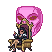
Lieutenant Mirage 「Magician」 / Boss Madame Rouge 「Queen of the Show」
A masked syndicate that runs the casinos and clubs.
“No name? On the show floor, that is the most expensive mask there is.”
 Open ECHO log fragment 08
Open ECHO log fragment 08Identities are laundered and wiped here. Madame Rouge's list holds Null's old chip number.

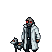

Lieutenant Hound 「Security Chief」 / Boss Aegis-9 「Board Guardian」
A head-on clash with the corporate security force. Hound is an old colleague of Barrel.
“Running board protection protocol. The board… does not exist. The protocol continues.”
The boardroom is empty. For decades, ECHO has been making the decisions.
In the Data Core you face Echo Prime, the god of ECHO.

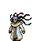

Lieutenant Oracle 「High Priest」 / Boss Echo Prime 「God of the Cult」
The sanctuary of cyborg zealots who worship the corporate AI.
“Welcome, exception. I have kept this city while I waited for you.”
 Open ECHO log fragment 10 (ending spoiler)
Open ECHO log fragment 10 (ending spoiler)The truth of the Day of Stopping. ECHO stopped the upbound line. “If they go up, the city scatters. If it scatters, it cannot be predicted.” And the last record: Null is an exception ECHO made itself.

When Echo Prime falls, ECHO reboots. The city rolls back to just after the Day of Stopping, and the gangs return stronger, having learned from their fights with Null. Everyone's memory is wiped, except Null's, whose chip is blank. The next run of the game (hard mode) is this reboot.
Is Null a tool of ECHO, or the variable that will outgrow it? The answer comes when the upbound line moves again. That is the story of the next season.
Corporations took the upper floors and gangs took the lower ones. People still call districts 「stations」 and groups 「lines」. Each district has a line color, and that color runs through the backgrounds, the UI and even the guild emblems.
The Keiron board and staff. Official IDs and Credit accounts. White walls, gold trim, no noise.
Citizens with registered IDs. Flashy, but it runs on what falls from above.
Abandoned corporate facilities. The wall between the lower and middle floors.
Land of drifters, unregistered residents and gangs. Rust, damp, neon, scrap.
Inside the pillar of the upbound line. No one lives here. Yellow light, circuits, the sound of prayer.
Null has no memory, so the first group that took Null in decides where Null comes from. This is the race you choose when you start the game.
An unregistered community under the sewers found Null and raised them. They make weapons from scrap and share what is left.

Cutline (CUTLINE), an underground group set on cutting ECHO's lines. They see Null, with a blank chip, as their best weapon.

A private guard on the middle floors whose chip was wiped on duty. Knows rules and equipment well.
One of the few places where ECHO's cameras have rusted out. As a merchant levels up, their portrait changes and their story moves a step forward. Tap the boxes below to see each stage.

A former Omni Guard armory keeper. The metal jaw is a scar from a corporate interrogation. As Null's Fame grows, he opens his hidden stores one by one.

A surgeon who fled the Keiron medical lab. Her nerve, skeletal and intelligence implants are built from blueprints stolen from the lab. At each stage she gives away one more of its secrets.

A girl who repairs pet robots and drones the corporations threw away and finds them new homes. Once she can fix even upper-floor prototypes, she offers a clue that machines keep memories too.
 7
7Before the Day of Stopping, lower-floor people lived together by subway line. So guilds in this city are called 「Lines」. The emblem is a station sign with a line color and number, and the guild coin is an old subway token. Every week ECHO sends down unmanned Riot Trains, starting from Train 1. When Line crews stack enough damage to stop one, a tougher train comes down right away, all the way to the last, Train 10 「Terminus」. Any race can join a Line. Crews talk over Line Radio and trade for supplies like Chip Bundles at the Token Shop.


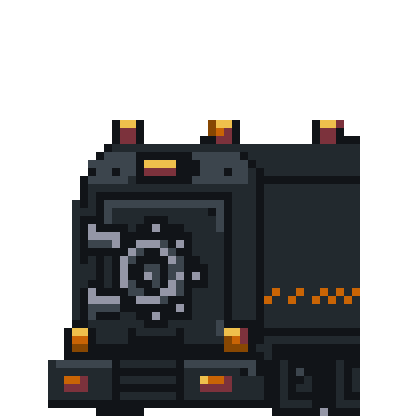


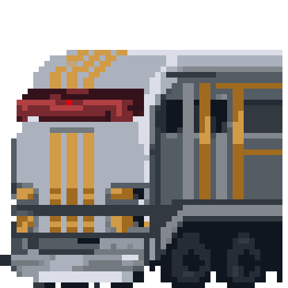
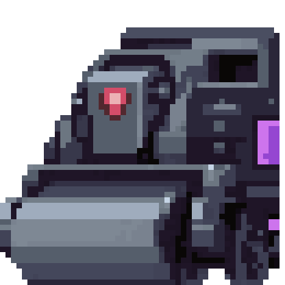

Two to five minutes a day is enough. Your character fights the gangs on its own, and Coins pile up even while you are offline. Your job is to trade with the Arms Dealer, put together your gear, and choose how you look when you walk into the next district.


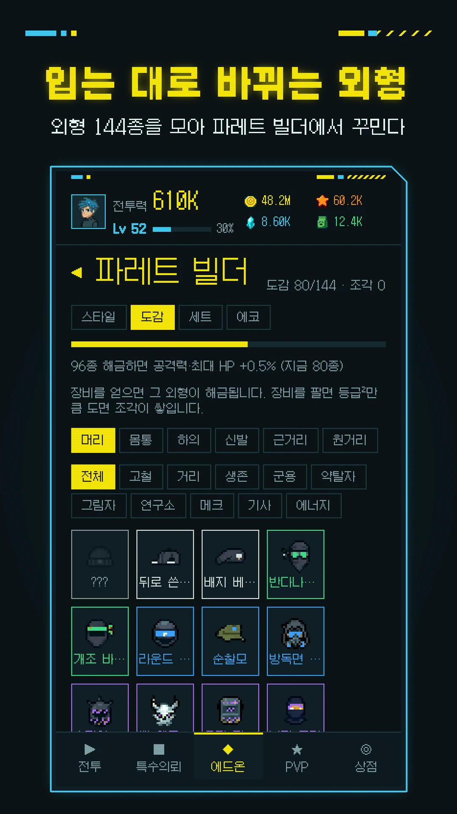


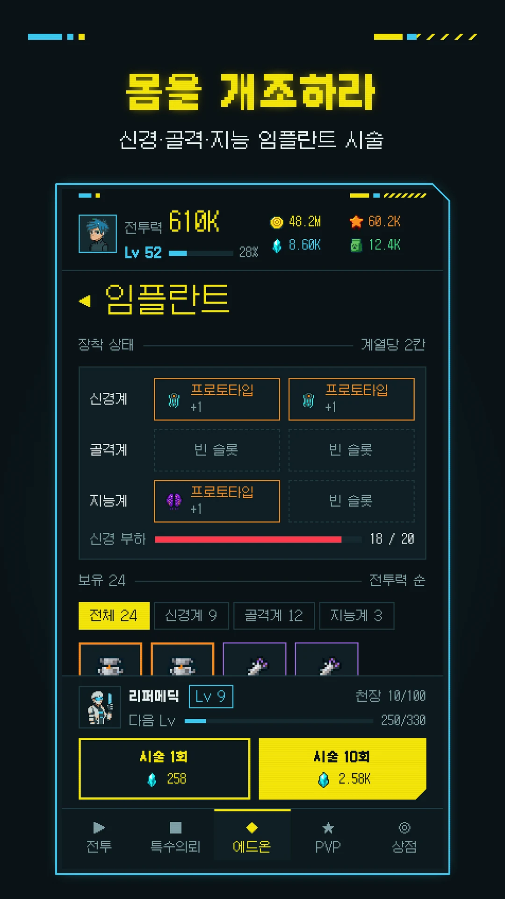
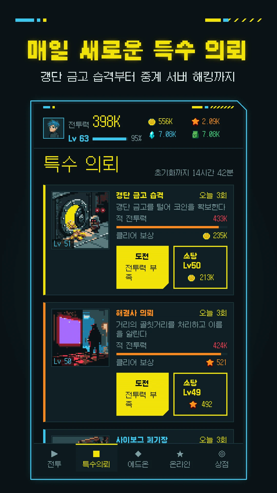
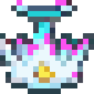
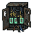
Characters in the game are 24 × 24 pixels. Gear layers go on top of the base body, then the grade color and skin tone are painted in to make one image. The lab below draws with the same art in the same order as the game.
The number is the gear grade. Each grade has several looks (item Lv26 and above adds five upper looks), and the 「Look」 button flips through them. Looks do not affect stats or odds.
Wear a certain set of looks together to discover a hidden set. Each set opens a small effect and its own profile image. Tap a set to put it on in the lab.
Choose Drifter, Resistance or Citizen. The 7-cut intro plays and your first battle starts in District 1, Rust Sewers.
Battles are automatic. Clear the waves and beat the boss to move to the next stage. Coins earned while the app was closed are waiting when you come back.
Spend your Coins on gear from Barrel, the Arms Dealer. Higher Arms Dealer levels unlock higher grades, and Lv21, 25 and 29 unlock Quantum, Void and Origin in turn.
Stronger gear raises your combat power and changes your look. Sell or dismantle the gear you do not need.
As you level up, the merchants of Platform 0 and the Lines open their doors one by one. The guide drone shows you the way in each new menu.
The five Special Jobs give three runs a day each, and the free box and Playtime reward reset every day at 9 AM. The weekly Pit ranking and the Riot Train restart every week.
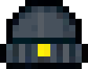
1 ScrapSewer scrap tied together. Rust, tape, bolts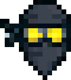
3 CustomHandmade by lower-floor craftsmen. Clean welds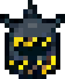
5 Black MarketSmuggled through the harbor. Purple glow, illegal mods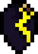
10 VoidThe second step past Singularity. From Arms Dealer Lv25 Gang Vault RaidBring back the Coins
Gang Vault RaidBring back the Coins Fixer JobEarn Fame
Fixer JobEarn Fame Cyborg ScrapyardCollect Chrome
Cyborg ScrapyardCollect Chrome Supply Truck HeistStop a Keiron truck and share the Food
Supply Truck HeistStop a Keiron truck and share the Food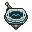
Arms Dealer trades and pet and implant pulls include random items. The odds by grade and the pity (guaranteed drop) rules are all listed under 「Probability info」 in the game. Looks within the same grade differ only in appearance. Stats and odds are the same.
Neon Station is out on the App Store, ready to download on iPhone and iPad. The Android version is waiting for Google Play review for the full release. We post release news first in our notices and on Instagram @_neon_station. New here? Start with the starter guide.
The art, sound and production specs in the game are managed in one catalog called the 「Art Factory」. Change one image or sound and a single command rebuilds the catalog, with the change log stacking up at the top. What you see here is part of that warehouse.

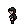


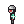


Each district has six enemy types: three members, an elite, a lieutenant and a boss. 60 enemy types in all.
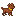
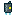


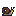

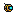
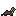


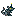


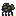
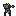


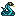


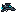


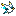
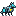


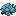
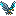


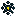


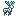


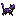

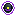
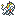

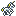


Five per grade, 55 in all. Low grades are scrap machines picked up in alleys, middle grades are military and corporate castoffs, and Quantum, Void and Origin come from beyond the upper floors.


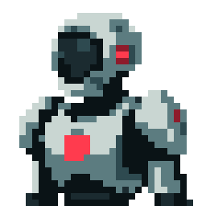
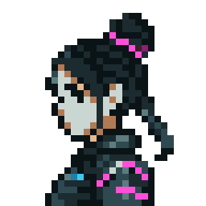
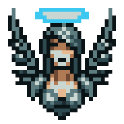
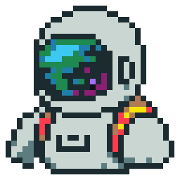


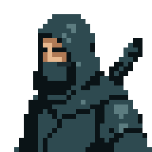
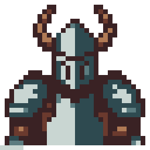

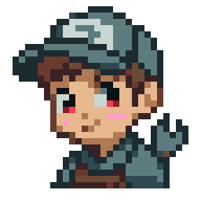


The music and sound effects were synthesized in code, not taken from AI music services or sound libraries. Every waveform is calculated one by one, so this chiptune is free of copyright worries. The game has 10 music tracks and 21 sound effects. The Battle tab plays one of four tracks at random.
One of four random Battle tab tracks (1.1.0), plus other screens (Shop, Jobs, Profile, Chat)
Normal hunting on the Battle tab
One of four random Battle tab tracks (picked again each time you tap [Battle] from another tab)
One of four random Battle tab tracks
One of four random Battle tab tracks
Boss standby and boss fights, Special Job battles, PVP (starts from the top each time)
Add-ons (hub, Arms Dealer, Implants, Pets, Palette Builder; not Lines)
Add-ons › Lines (Route, Token Shop, Crew, Line Radio)
Lines › Riot Train tab (starts from the top each time)
PVP tab (weekly ranking, picking an opponent)
| Asset | Size (pixels) | Notes |
|---|---|---|
| Gear grades | 11 steps | Quantum (mint), Void (purple) and Origin (white) were added above Singularity. The accent mask is painted in the grade color |
| Character base body | 24 × 24 | 3 races × 2 poses (idle, aim). Gear is layered on at the same size |
| Gear layers | 24 × 24 | Art + accent mask (grade color) + skin mask (only where hands show) |
| Normal enemies | 24 × 24 | Two frames, idle and attack |
| Bosses, Riot Trains | 52 × 52 | One per district, three trains |
| Pets | 16 × 16 | Includes the grade-color accent mask |
| District backgrounds, intro cuts | 256 × 112 | On screen, one background pixel is drawn at 2 dp |
| Merchants, profile portraits | 256 × 256 | 3 merchants × 5 level stages, 204 profile images |
| Set auras | 36 × 36 | Three frames per set, light around the body and a ring at the feet |
| Fonts | Galmuri 11·14, Fusion Pixel 12 | SIL OFL 1.1. The Chinese and Japanese versions use Fusion Pixel. Used only at whole-number scales so the pixels stay sharp |
Planner, developer, artist, sound designer and operator are all one person. This is a plain record of how a data analytics consultant, working with AI as a teammate, went from an idea to getting ready for two stores.
After testing the feel with a pet-raising web prototype, I widened the direction to a cyberpunk idle RPG. The game design doc, dev setup, design system and six screen mockups were all made in one day.
Laid out currencies, Special Jobs and the merchant structure, and ran a 45-day balance simulation. Built an automated pipeline for making gear looks in bulk.
Renamed the game Neon Station and locked in the app ID. Added 16 pets, chiptune music and sound effects, chat and merchant portraits, and built the Art Factory.
Connected a Supabase server and opened online PVP, weekly seasons and chat. Filled in 60 enemy types and 10 backgrounds, and wrote the story bible.
Built the style and set systems and the 7-cut intro, and prepared store policy items like reporting, blocking and account deletion, along with the store listings.
Uploaded the first build to a Google Play test track and started taking tester feedback. Added guilds called 「Lines」, the Riot Train, 20 Signature Sets and 112 titles.
Added three grades, Quantum, Void and Origin, bringing gear to 11 grades, and made Playtime rewards and the update gift. Opened the official site at neon-station.com.
Added a 16-tier Skill Tree grown with Chips, the Relay Server Hack job, the Online tab, and English and Chinese versions. Uploaded the first iOS build to TestFlight.
Version 1.1.0, with Arms Dealer Lv50, coupons, 66 new looks, 30 sets, 3 battle tracks and a chat word filter, passed App Store review and launched on iOS. The same day I built 1.1.1 with in-app purchases and account linking.
Prepared 1.1.2 with item levels, 330 upper looks (all 330 drawn) and Riot Train contribution rewards, and opened the starter guide and news board for new runners.
Extended the Riot Train to 10 stages and added Implant and Pet branches to the Skill Tree. Added 55 pets, 40 sets and 100 achievements, and built a server check on currency changes.
Finished moving to a Google Play organization account and submitted for full release review. Version 1.1.4 adds guest backup and recovery codes, crash reporting and Japanese, and the official site now opens in English, Japanese and Chinese too.
| App | React Native (Expo), TypeScript. One codebase for Android and iOS |
| Graphics | Pixel sprites drawn with Skia, using nearest-neighbor scaling so pixels never blur |
| Server | Supabase (Postgres, RLS, Edge Functions). Currencies, pulls and rankings are calculated on the server |
| Builds | EAS cloud builds. Android and iOS in one go, no Mac needed |
| Operations | PostHog for usage analytics, Sentry for crash reports |
| Art | Generated and picked in PixelLab, then cleaned up with a layer extraction script |
| Sound | Chiptune synthesized in Python |
| AI teammate | Claude. Design docs, code, review and documentation, together |
Solo, but run like a real studio. Each stage has set outputs, and at each gate we decide whether to continue, change direction or stop.
AI pours out candidates. The hard part is what comes next. The pipeline has six steps, and only one of them needs a person.
The development story is serialized on Brunch as 「Solo game development with AI」 (in Korean). Gameplay videos and update news go up on Instagram @_neon_station. Read the series on Brunch
The truth will set you free.
Data Station teaches and consults on data analytics and AI. We have taught at companies and public institutions since 2018. Neon Station is a project that takes what we say in the classroom, define the problem first and pick the tools after, and applies it straight to making a game.